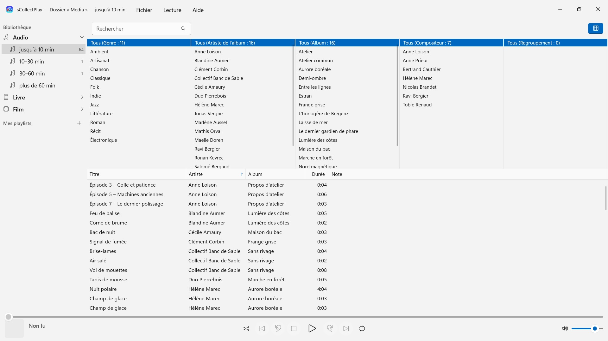
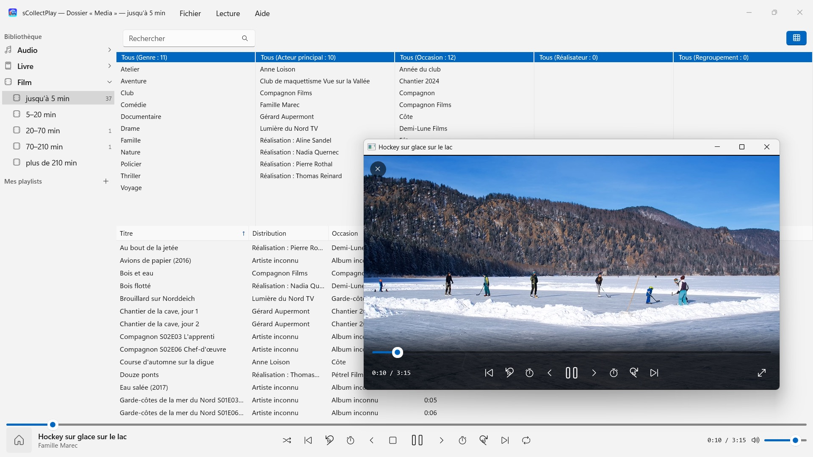

sCollectPlay
Choisissez un dossier et lancez la lecture – sans import, sans copie
Sur le Microsoft Store à partir de novembre 2026Choisissez un dossier et lancez la lecture : musique, livres audio, podcasts, films et e-books se classent d’eux-mêmes – sans import, sans compte, sans cloud. Les bibliothèques iTunes (XML) aussi, avec leurs playlists.


sCollectPlay lit votre collection là où elle se trouve : dans n’importe quel dossier, sur des disques externes ou sur un lecteur réseau. Choisissez un dossier, et musique, livres audio, podcasts, films et e-books s’affichent classés dans une liste – sans importation, sans copie, sans que rien ne change dans vos fichiers.
24 langues : français, allemand, anglais, chinois (simplifié et traditionnel), coréen, croate, espagnol, finnois, hongrois, italien, japonais, néerlandais, norvégien bokmål, persan, polonais, portugais, roumain, russe, suédois, tchèque, thaï, turc, ukrainien. L’app suit la langue d’affichage de Windows.
DEUX SOURCES
- Dossiers : sCollectPlay parcourt un dossier et ses sous-dossiers et lit le titre, l’artiste, l’album, le genre et la durée dans les fichiers eux-mêmes. Plusieurs dossiers peuvent être réunis en une seule liste. Au lancement suivant, le dernier état analysé s’affiche aussitôt, et « Actualiser les dossiers scannés » (Ctrl+R) ne relit que ce qui est nouveau, modifié ou supprimé.
- XML iTunes : la bibliothèque d’iTunes pour Windows avec ses playlists, ses notes et ses nombres de lectures. Si un titre est de la musique, un livre audio, un podcast, un long métrage, une série ou un clip vidéo, l’app le reprend du XML.
DE L’ORDRE SANS EFFORT
Un dossier ne dit pas si un fichier est une chanson ou un livre audio. C’est pourquoi sCollectPlay classe par durée lors du scan : audio jusqu’à 10, 10–30, 30–60 et plus de 60 minutes, vidéo des clips courts aux films de plus de trois heures et demie. Chansons, épisodes de fictions audio et livres audio sont ainsi séparés sans que vous ayez rien à régler. Les e-books et les PDF, l’app les reconnaît à leur extension.
La barre de titre de la fenêtre indique à tout moment ce qui est chargé : quel dossier, quel XML.
TROUVER
- Recherche dans le titre, l’artiste, l’album, le genre et d’autres champs – y compris dans les playlists
- Un navigateur de colonnes par genre, artiste, album, compositeur et regroupement, avec sélection multiple par colonne. Des milliers d’artistes sans défiler sans fin : regroupés par initiale
- Colonnes à afficher et à masquer librement, dont nom de fichier, débit, fréquence d’échantillonnage et taille ; largeur et ordre se règlent en faisant glisser avec la souris
- Les derniers dossiers et fichiers XML utilisés sont à portée de main dans le menu Fichier, et au démarrage suivant la dernière source est de retour
LECTURE
- Audio avec file d’attente, lecture aléatoire et répétition
- Vidéos dans leur propre fenêtre, avec ralenti, lecture image par image, choix de la piste audio et des sous-titres, et plein écran
- Windows lit lui-même la plupart des formats – MP3, AAC, FLAC, OGG, Opus et WMA comme MP4, MKV, AVI, WMV et MPG. Ce qu’il ne connaît pas, comme AIFF, DSD ou FLV, l’app le transmet au programme défini dans Windows pour ce type de fichier – VLC, par exemple
- Playlists personnelles et intelligentes
- Toute playlist peut être exportée avec ses fichiers sous forme de dossier avec une liste M3U8 – sur une carte SD, une clé USB ou dans un dossier, par exemple pour VLC sur un appareil Android
VOS FICHIERS RESTENT TELS QU’ILS SONT
sCollectPlay n’écrit aucun tag et ne modifie aucune métadonnée. Il ne supprime que sur votre ordre explicite : un fichier multimédia provenant de dossiers scannés ou d’un XML iTunes va alors dans la Corbeille (sur les lecteurs sans Corbeille, comme les lecteurs réseau, il est supprimé définitivement après confirmation). Les fichiers d’une bibliothèque sCollect ne sont jamais supprimés par l’app.
SUR VOTRE PC, ET NULLE PART AILLEURS
Aucun compte, aucun cloud, aucune analyse, aucune publicité. L’app n’accède qu’aux dossiers que vous lui donnez. Chaque langue avec son aide complète.
sCollectPlay Lite · Gratuit — L'édition allégée de sCollectPlay : ouvrir simplement un dossier, un fichier XML iTunes ou une médiathèque sCollect et y lire musique, films, livres audio et podcasts, avec listes de lecture, pistes audio et de sous-titres, ralenti et avance image par image. Une seule source est ouverte à la fois. Le navigateur en colonnes, les listes de lecture personnelles et la liste des sources récemment utilisées ne sont disponibles que dans la version complète.
- Nécessite Windows 11 ou version ultérieure
- 24 langues
- Assistance : SwiftAppsBavaria@gmx.net
- Politique de confidentialité de sCollectPlay et sCollectPlay Lite